The following input groups are described on this page:
The Layout Setup page is the hub for configuring the field layout procedure, land boundaries, and tower height. Aspects of the layout process, design simulation set, design point attributes, and the position generation method are all controlled from this page. The following dialog provides an overview of SolarPILOT's field layout procedure.
Heliostat Field Layout Procedure SolarPILOT generates a heliostat field layout through a multi-step process:
|
Jump to: Heliostat selection criteria; Optimization simulations
The Design Point Definition group provides inputs for configuring the simulation(s) that SolarPILOT uses to evaluate performance of potential heliostats in the field. Performance simulations may be configured using a number of schemes, and weather data, sun position, and spacing of simulations throughout the year are all dependent on the selected method. This group also allows configuration of the preferred method for heliostat performance ranking.
The "Design Point" for the layout process may be a set of simulations, a single design point, or the unfiltered set of all potential heliostat positions.
The design point definition is not used for imported or otherwise specified field layouts.
Specify the metric by which heliostats will be compared over the design point simulation set. Several options are available, though Power to Receiver or TOU-Weighted Power are recommended for regular use. The performance of each heliostat is monitored over the design-point simulation set such that any of the following metrics may be used to sort for preference in the final layout.
Power to receiver
Sort by the total power (normalized by heliostat reflector area) delivered to the receiver over the simulation set. [kWt]
Total efficiency
Sort by the average optical efficiency of the heliostat over the simulation set, including all optical losses. [%]
Cosine efficiency
Sort by the average cosine efficiency of the heliostat over the simulation set. [%]
Cosine efficiency is defined as the power incident on the surface of the heliostat divided by the specific solar resource times the area reflective area of the heliostat. Cosine efficiency decreases as the angle between the normal of the heliostat surface and the incoming solar irradiation increases.
Attenuation efficiency
Sort by the average atmospheric attenuation efficiency of the heliostat over the simulation set. [%].
Attenuation efficiency refers to the proportion of light that is not scattered by atmospheric particles (dust, aerosols, etc.) in the path between the heliostat and the receiver. Note that the attenuation efficiency is strictly a function of the distance between the heliostat and the receiver (the slant range) and does not change over time.
Intercept efficiency
Sort by the average intercept efficiency of the heliostat over the simulation set. [%]
Intercept efficiency is a modeled value that compares the amount of light striking the receiver with the amount of light that would strike a co-located plane of infinite extent. Intercept efficiency can change over time as the image shape reflected by a heliostat changes with sun position.
Blocking efficiency
Sort by the average blocking efficiency of the heliostat over the simulation set. [%]
Blocking occurs when a neighboring heliostat blocks light that has been reflected by the heliostat.
Shadowing efficiency
Sort by the average shadowing efficiency of the heliostat over the simulation set. [%]
Shadowing occurs when a neighboring heliostat blocks sunlight that would otherwise hit the heliostat.
TOU-weighted power
Sort by the total power (normalized by heliostat reflector area) weighted by the Payment Allocation Factors (also known as time-of-use or TOU factors) on the Markets page, if applicable. [kWt].
The power to the receiver may be weighted by the payment allocation factors depending on the month and hour of the day in which the energy is generated during the simulation set. If the Enable Payment Weighting Factors option is disabled, all payment allocation factors are set to 1.0 and this option is equivalent to the Power to receiver sorting option.
Choose the simulation(s) that will be included in the design assessment. All potential heliostat positions are evaluated at each design point simulation to determine the final layout. Refer to the page overview and the Heliostat Field Layout Procedure discussion for more detail.
Choosing a design point simulation set The design point simulation set serves as a model for the expected solar and atmospheric conditions at a location of interest. The various optimization simulation methods explore the trade-off between computational efficiency and model fidelity. Generally speaking, increasing the number of simulation points in the design point set will improve the estimate of actual plant performance over time, thus facilitating better heliostat layout selection. The methods described below span the spectrum from simple (and likely inaccurate) to enumerative (and more accurate), while several other methods attempt to improve accuracy with averaging of data and careful selection of design point positions. When choosing a design point simulation method, consider the following:
|
Single Simulation Point
Specify the day of the month, the hour of the day, the month, and the ambient weather conditions for a single design-point simulation.
Simulate all daytime hours for specified days
Indicate whether the design point simulation should extend to each daylight hour in the specified day/month. The weather conditions are applied to each hour of the day, although SolarPILOT calculates the current sun position for each simulation point.
Do Not Filter Heliostats
The final layout will consist of all heliostat positions within the feasible land region. This option does not require design point simulations.
Annual Simulation
Each daylight hour of the year is simulated. Due to the large number of evaluation points, this option can take several minutes to complete.
Limited Annual Simulation
The Limited Annual Simulation option evaluates a subset of the days and hours in the weather file by sampling weather data at regularly spaced intervals throughout the year. The days of the year selected for the limited annual simulation are shown in the summary table along with properties of those days.
Number of days to simulate
The number of unique days that will be simulated for heliostat field layout generation.
Simulation hour frequency
The frequency at which simulations will be provided for each simulation day. For example, if (1), then every daylight hour is included. If (2), then every other hour symmetric about solar noon, if (3), then every third hour symmetric about solar noon, etc.
Item |
Description |
Day No. |
The day of the year used for simulation |
Month |
The month containing the simulation day |
Day |
The day of the month of the simulation day |
Peak DNI |
(W/m2) The maximum observed DNI in the weather file on the simulation day |
Total DNI |
(kWh/m2) The total DNI incident on 1 m2 over the simulation day |
No. hours |
The number of simulation hours on the simulation day. This count is subject to the Simulation Hour Frequency setting and indicates the actual number of simulations that will be executed for the simulation day. |
Representative Profiles
The Representative Profiles options builds averaged daily profiles for a limited number of days throughout the year based on averaged weather data in the period of days surrounding the simulation day. This option is structured identically with the Limited Annual Simulation option, but uses averaged data rather than selected data points.
Each representative profile is constructed as follows:
Number of days to simulate
The number of unique days that will be simulated for heliostat field layout generation.
Simulation hour frequency
The frequency at which simulations will be provided for each simulation day. For example, if (1), then every daylight hour is included. If (2), then every other hour symmetric about solar noon, if (3), then every third hour symmetric about solar noon, etc.
Item |
Description |
Day No. |
The day of the year used for simulation |
Month |
The month containing the simulation day |
Day |
The day of the month of the simulation day |
Peak DNI |
(W/m2) The maximum DNI for the simulation day based on the averaged hourly profile |
Total DNI |
(kWh/m2) The total DNI incident on 1 m2 over the simulation day using the surrounding days' average. |
No. hours |
The number of simulation hours on the simulation day. This count is subject to the Simulation Hour Frequency setting and indicates the actual number of simulations that will be executed for the simulation day. |
Efficiency Map + Annual
The Efficiency Map + Annual simulation option constructs an "efficiency map" lookup table for each heliostat for a subset of days throughout the year, then evaluates each daylight hour of the year using the lookup data to establish an annual energy production estimate. The annual simulation interpolates the lookup table based on solar azimuth and zenith angles, then multiplies the estimated heliostat efficiency by the available solar resource to determine power production for each hour.
The simulation days used to generate the lookup table are equally spaced throughout the year and are symmetric about the summer solstice.
Number of days to simulate
The number of unique days that will be simulated to create the efficiency lookup table.
Simulation hour frequency
The frequency at which simulations will be provided for each simulation day. For example, if (1), then every daylight hour is included. If (2), then every other hour symmetric about solar noon, if (3), then every third hour symmetric about solar noon, etc.
Item |
Description |
Day No. |
The day of the year used for simulation |
Month |
The month containing the simulation day |
Day |
The day of the month of the simulation day |
No. hours |
The number of hours on the simulation day. |
The desired power delivered by the receiver at the reference design point. The total power delivered by the receiver is equal to the power provided by the solar field minus the heat loss from the receiver and heat loss from tower runner piping.
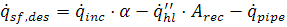
where:
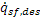 |
MW |
Thermal power delivered by the solar field |
|
MW |
Thermal power incident on the receiver (prior to emissive, convective, and reflective thermal loss) |
- |
Receiver surface absorptivity |
|
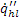 |
kW/m2 |
Emissive and convective thermal loss per square meter of receiver area. This value is calculated using the receiver heat loss settings on the Receivers page(s). |
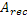 |
m2 |
Absorptive surface area of the receiver |
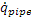 |
MW |
Thermal loss due to riser/downcomer piping. This value is calculated on the Receiver page(s) and may be a function of tower height. |
Design-Point DNI Value
The solar resource available at the reference design point. The Solar Field Design Power must be met assuming this magnitude of available solar resource.
Sun Location at Design Point
Select the sun location for the reference design point. The Solar Field Design Power must be met assuming this sun position.
Summer Solstice
Use the summer solstice sun position for the current weather file location (typically June 21st).
Equinox
Use the equinox sun position for the current weather file location. Note that spring and fall equinox sun positions are equivalent.
Winter Solstice
Use the winter solstice sun position for the current weather file location (typically December 21st).
Zenith
Use a sun position directly overhead (elevation of 90°, azimuth of 0°).
Other
Specify a custom sun position for the reference design point.
Design-Point Solar Azimuth
The solar azimuth angle for the custom design point. Note that -180° = +180° = South; 0° = North; +90° = East; -90° = West.
Design-Point Solar Elevation
The solar elevation angle for the custom design point. Note that 0° is the horizon, 90° is straight overhead (zenith).
Jump to: Scaled Bounds; Fixed Bounds; Land Boundary Array; Importing External Land Geometry Files
SolarPILOT provides several options for specifying the region of land where heliostats may be placed. Options include scaled bounds where the land area is a function of tower height, fixed bounds which specifies a minimum and maximum fixed radius centered about the tower where heliostats may be placed, and an option for specifying polygonal shapes that may represent included or excluded land areas. Multiple land boundary methods may be used simultaneously. The following section describes the options and inputs for customizing field boundaries.
Specifying Land Boundaries The simplest approach for specifying land boundaries uses either the scaled or fixed radial limits. These options are effective for most theoretical analyses where the impact of various design changes is of interest, or where a best-case layout is of interest. However, many prospective projects construct field layouts within inflexible parcels of land. For these cases, the land boundary array option allows layout and characterization with highly constrained land geometries. Complex shapes can be implemented with this option, and the computational expense during layout is usually minimal. Land bounds may be controlled with more than one option. To enable multiple controls, simply enable the checkboxes of the desired options. Active land boundaries are viewable on the Layout Results page by selecting the "Land Boundaries" option in the Plot Display control menu. To refresh the land boundary plot after input modification, click the "Regenerate current layout" button on the Field Layout page. |
Minimum Solar Field Extent Angle
The angular bound in the counter-clockwise direction above which heliostats may be placed. Note that -180° = +180° = South; 0° = North; +90° = East; -90° = West.
Maximum Solar Field Extent Angle
The angular bound in the clockwise direction below which heliostat may be placed. Note that -180° = +180° = South; 0° = North; +90° = East; -90° = West.
Minimum Heliostat Distance [Calculated]
The actual minimum radial distance that a heliostat may be placed away from the receiver position. This value is calculated only for Bounds scale with tower height and Use fixed land bounds options.
Maximum Heliostat Distance [Calculated]
The actual maximum radial distance that a heliostat may be placed away from the receiver position. This value is calculated only for Bounds scale with tower height and Use fixed land bounds options.
Bounds Scale With Tower Height
Choose whether the min/max field boundaries scale with tower height.
Maximum Field Radius
The maximum radial distance in terms of equivalent tower heights that heliostats may be placed in the field. The actual distance is equal to this value multiplied by the tower height.
Minimum Field Radius
The minimum radial distance in terms of equivalent tower heights that heliostats may be placed in the field. The actual distance is equal to this value multiplied by the tower height.
Choose whether the min/max field boundaries are constrained by fixed min and max values.
Maximum Land Radius (fixed)
The maximum radial distance in units of meters that heliostats may be placed in the field.
Minimum Land Radius (fixed)
The minimum radial distance in units of meters that heliostats may be placed in the field.
Choose whether the allowable heliostat positions are constrained by polygonal shapes specified in the land boundary table.
Polygons are specified point-wise with an X-Y coordinate for each point. The polygon is left "open", where the final point specified for a given polygon is assumed by SolarPILOT to connect to the first point specified for the polygon. Order of entry is significant, as neighboring points are assumed to be sequential in real space. The polygon may be convex or nonconvex, but should not contain intersecting lines.
Offset any exclusion polygons so that their positions are fixed with respect to the tower location offset. For example, if the power island is an exclusion, and if you specify a tower location offset, the power island exclusion will move along with the tower when offset. Inclusion regions are not offset relative to the tower position in any case.
X-displacement (positive to the east) of the tower with respect to the land boundaries.
Y-displacement (positive to the north) of the tower with respect to the land boundaries.
Import Button
Import a text, comma-separated, data, or keyhole markup language (KML) file with land boundary data. This button will prompt a file dialog for information on loading the file.
SolarPILOT imports text, comma-separated, and data (*.txt, *.csv, *.dat) files in the same way, and searches the contents of the file for a common data delimiter, parsing each entry. Delimiters may include space, tab, semi-colon, or comma characters.
SolarPILOT imports KML files using an interactive dialog. This process is described in the Importing External Land Geometry Files section below.
Export Button
Export the land boundary table to a text, comma-separated, or data file. This button will prompt a file dialog for information on saving the table to file.
Land Boundary Table
Item |
Description |
Type |
The "type" of polygon being specified. I - Region of inclusion E - Region of exclusion Enter the character "I" or "E" to indicate inclusion or exclusion for the polygon being specified. |
No. |
The identification number of the current polygon being specified. Numbering should begin with 0. All points in a contiguous polygon should refer to the same identification number. Numbering is independent for Inclusions and Exclusions. Both types (if used) will have No. "0", "1", etc., as applicable. |
X |
The "X" coordinate (East+, West-) of a point. |
Y |
The "Y" coordinate (North+, South-) of a point. |
Defining Land Boundaries with Multiple Polygons The region containing heliostats can be defined using the land boundary array option and one or more polygonal shapes. This is a powerful option that allows detailed description of land outlines, roads, cultural exclusions, geographical features, etc. The specified polygonal regions are either "inclusional" or "exclusional", indicating that heliostat positions are to be included within a particular area or excluded, respectively. SolarPILOT accepts polygons as a list of points in the land boundary array table. Membership of each point within any particular polygon is indicated with the "No." flag, or the polygon number input. SolarPILOT applies the following rules when processing boundary polygons:
The following example illustrates three land boundary polygons - two inclusion regions and one exclusion region. The land boundary table for this example is reproduced below. 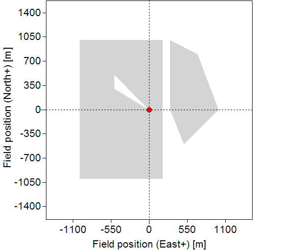 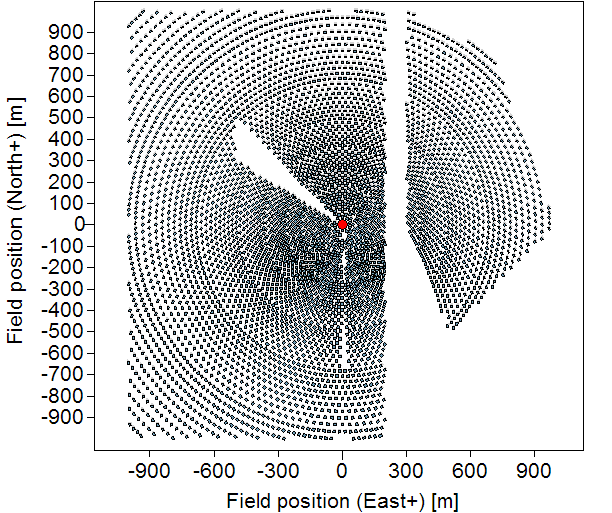
|
Importing External Land Geometry Files SolarPILOT can import boundary geometry files that have been created using external geospatial software such as Google Earth™. SolarPILOT parses the contents of a KML file to determine land boundaries based on polygonal shapes constructed within the geospatial software. This dialog provides a brief tutorial on using KML files in SolarPILOT. For this example, we use Google Earth™ to reconstruct the land boundaries for the Ivanpah-II plant in Ivanpah, CA (USA). The process for incorporating KML data is straightforward, and the main steps are outlined as follows:
Each of these steps is illustrated in more detail. 1. Acquire and open Google Earth A free version of Google Earth is available at https://www.google.com/earth/. 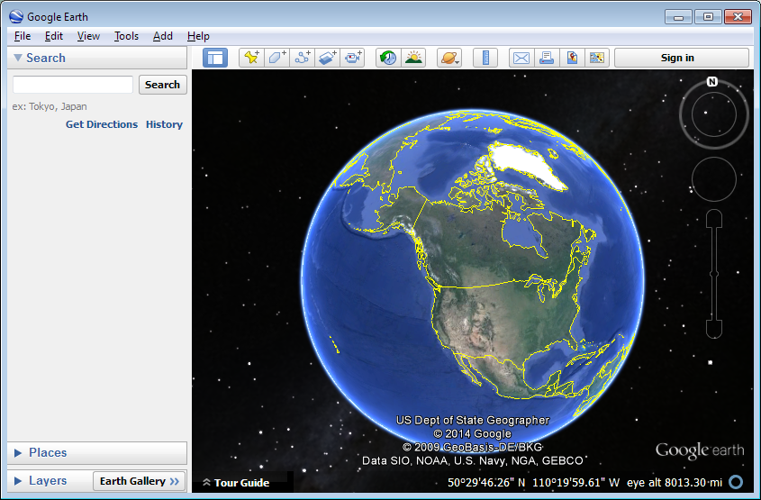 2. Locate the land parcel of interest Use the search tool or simply scroll to the location that you would like to implement. 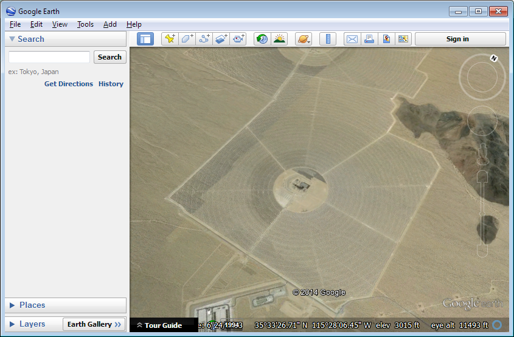 3. Identify tower location with a Placemark Make sure the Toolbar is enabled (View -> Toolbar). Click the "Add Placemark" icon and select the position of the tower. Name the tower location as desired. Click OK.
4. Construct polygons for each inclusion or exclusion of interest On the Toolbar, click the "Add Polygon" icon and begin constructing the primary inclusion polygon. Trace the outline of the polygon by clicking the vertices' location. Once the geometry is constructed, name the polygon and click OK. In this example, the shading style of the polygons were also modified to clarify inclusion and exclusion regions. 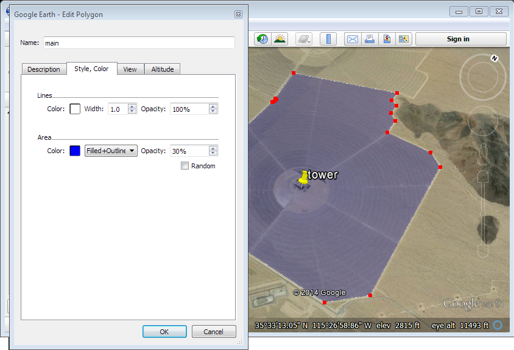 Each constructed polygon will appear in the "My Places" tree. You may wish to organize your places using a single folder, as shown in the following image. 5. Export each polygon to a unique KML file All geometry components must be exported as KML files. Right click each component and choose "Save Place As...". Select "KML" as the extension type and save the files to a convenient location. 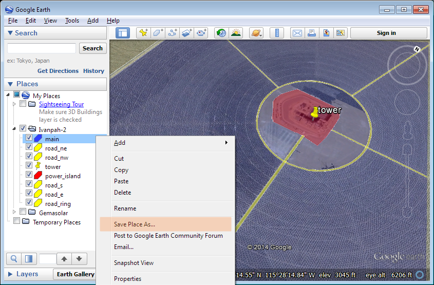 6. Import tower location into SolarPILOT, then import polygon file(s) into SolarPILOT In SolarPILOT, enable the "Use Land Boundary Array" option and disable the other options. Click the "Import" button. Navigate to the folder containing the KML files created in the previous step. Select the first polygon file that you wish to import and click "OK". (Note: don't select the tower location file in this step!). The "Land Import Settings" dialog will appear.
Click the "From File..." button. Select the KML file containing the tower location. The tower location coordinate inputs will automatically be populated. Now specify whether the polygon file selected at the beginning of this step is an Inclusion or Exclusion. If you seek to replace existing data in the land boundary table, choose "Replace" in the drop-down menu. If the table is not yet populated, choose "Append to". Click OK. The first polygon file has now been included in the table! Import subsequent geometry files by clicking "Import" and following this procedure. Note that the tower location must be specified only once and subsequent import operations will use the previously specified location. For geometries with multiple polygons, ensure that the region type and append status is correct. The land geometry is now available for simulation. This example produces the following field layout when all potential heliostats are included: 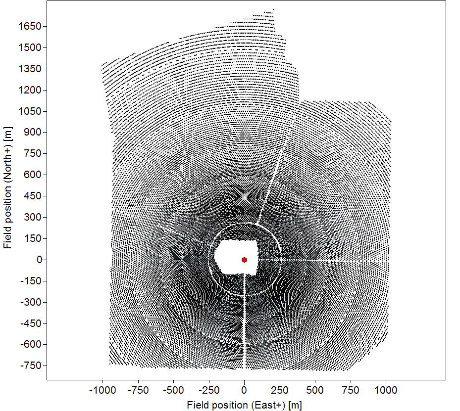 For more information on KML files, see http://en.wikipedia.org/wiki/Keyhole_Markup_Language. |
The tower optical height is the distance between the heliostat pivot point and the midpoint of the receiver, as shown below. The height of the tower structure is not necessarily equal to the tower optical height.

Choose the method for calculating potential heliostat positions.
This option uses the "radial stagger" method for heliostat layout. In this method, heliostat rows are placed alternatingly along iso-azimuthal lines at constant radii. This concept is illustrated below.
Initial heliostat spacing between heliostats in a row is determined by the Azimuthal Spacing Factor described below. As rows are added radially, the distance between neighboring heliostats in the same radial row increases. Once the ratio of heliostat spacing to the original spacing (in terms of absolute distance) exceeds the Azimuthal Spacing Reset Limit, the spacing resets to the original distance. This discontinuity is referred to as a "slip plane".
Spacing between rows in the radial direction is a function of the radius of the row. More information on how SolarPILOT calculates this dimension is provided below in the Radial Spacing Method descriptions.
Choose the algorithm for calculating the distance between rows.
The Eliminate Blocking option seeks to space rows radially such that heliostats along an iso-azimuthal line do not block reflected light from reaching the receiver. To accomplish this, rows of heliostats must be spaced sufficiently apart to prevent light reflected from the lowermost portion of the distal heliostat from being intercepted by the uppermost portion of the proximal heliostat, as illustrated below.
As the radial position of the rows increases, the elevation angle θ of the tangent line decreases, and the spacing between rows ΔR must also increase to prevent blocking. Note that ΔR represents the distance between alternating rows, as each intermediate row is offset azimuthally and does not contribute to blocking in this way.
See Radial Stagger: Eliminate Blocking for a mathematical description of this method.
Note that the row spacing must be sufficient to avoid collisions between neighboring heliostat rows. SolarPILOT ensures that collisions are avoided by calculating δmin for each row. See Radial Stagger: Collision Avoidance for a mathematical description of this method.
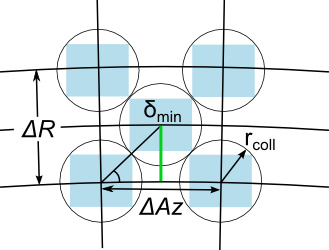
The No blocking-dense option is a variation of the Eliminate Blocking method described above. The separation between rows is calculated as a function of radial distance of each row from the tower such that heliostats falling along iso-azimuthal lines do not block the view to the receiver. However, heliostats that are proximal to the tower are limited in radial spacing by the collision radius rcoll. Once the spacing is dictated by the collision radius instead of the blocking distance, the entire heliostat is in full view of the receiver and cannot be blocked by more proximal rows. In this circumstance, heliostats may be "close packed," or placed next to each other in each row at the collision radius without regard for placement of heliostats in adjacent rows. The following layout illustrates a scenario with four close-packed rows, followed by the standard radial-stagger layout.
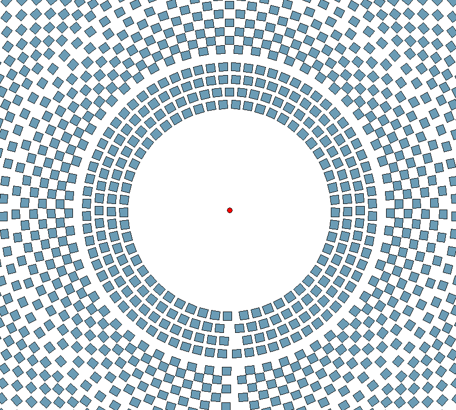
This value adjust the radial distance at which the layout transitions from close-packed to the standard radial stagger arrangement. The value that you specify multiplies the calculated radial distance at which the offset due to elimination of blocking supersedes the collision limit separation. An increase in this value will cause the transition to happen at a greater distance from the tower, but may introduce additional blocking loss.
The DELSOL3 software from Sandia National Lab incorporates several spacing correlations that azimuthal and radial spacing as a function of distance from the tower, heliostat height, heliostat width, heliostat geometry type (rectangular vs. round), and receiver type (external surround vs. cavity or flat plate). These correlations have been implemented in SolarPILOT and determine both radial and azimuthal spacing.
More information on the correlations is available in the DELSOL3 documentation (Kistler, 1986) and in the Radial Stagger: DELSOL3 Empirical Fit section.
The initial spacing between heliostats in a single row in terms of heliostat structural widths. The separation of heliostats in a row after a slip plane or in the first row of the field is determined by multiplying the Azimuthal Spacing Factor by the Heliostat Width.
The spacing ratio limit at which a slip plane is applied and the subsequent radial row reverts to initial azimuthal spacing.
The azimuthal spacing ratio is determined by dividing the azimuthal spacing between heliostats in a row by the minimum (initial) spacing. As shown in the radial spacing concept figure above, azimuthal spacing increases with radius and must be periodically reset to improve optical performance. The ratio of spacing in any given row to the initial spacing determines where the spacing will revert to the initial value.
This value determines the radial distance from the tower where the close-packing arrangement transitions to a standard radial-stagger layout pattern. Heliostats are closely packed in the region where each heliostat has full view of the receiver and is not subject to blocking. The theoretical limit of the no-blocking zone corresponds to a packing transition limit factor value of 1.0. Values <1 indicate transition into the radial-stagger layout will occur at lesser radii, while values >1 indicate transition at increased radii. Blocking may occur at values <1 because the theoretical cutoff assumes ideal orientation of each heliostat (sun position at zenith).
If enabled, the first row after the slip plane (that is, the first row after which azimuthal spacing has been reset to its initial value) will be spaced radially such that blocking is eliminated between the last row before the slip plane and the first row after the slip plane. The spacing is calculated such that the bottom edge of the outer heliostat row can view the tower over the top edge of the inner heliostat row, as shown above.
The fractional blocking allowed in the worst case orientation between the inner row before the slip plane and the outer row after the slip plane. A value of 0 indicates that the slip row spacing will be sufficient to eliminate all possible blocking, while a value of 1 would indicate that some heliostats may be fully blocked, depending on position in the field. The spacing between rows must be sufficient to prevent collision, regardless of the value specified.
The "cornfield" layout is also known as a "straight row", "rectangular" or "Cartesian" layout as heliostats are aligned in straight rows, typically along principle Cartesian axes. SolarPILOT includes this layout option and allows specification of spacing in both the principle East-West (X) and North-South (Y) axes. The macro shape of the field may also be specified as rectangular, hexagonal, or unconstrained.
The following figure illustrates the cornfield layout concept with regular grid spacing.
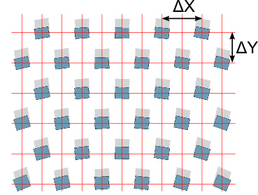
Spacing in the East-West direction between heliostat positions. The distance between heliostat positions in the X-direction equals the product of heliostat width and this factor.
Spacing in the North-South direction between heliostat positions. The distance between heliostat positions in the X-direction equals the product of heliostat width and this factor.
Specify the overall shape constraint of the heliostat field. Note that the shape will only appear intact if all possible heliostats are included in the final design. This may be achieved either by choosing the "Do Not Filter Heliostats" option as the Heliostat Selection Criteria, or by increasing the design point power until all heliostats are required to satisfy the reference design point conditions.
Constrain the heliostat field macro shape as a hexagon. The distance between the tower location and any corner position is equal to the Maximum field Radius setting in the Field Boundaries group.
Constrain the heliostat field macro shape as a rectangle. The distance between the tower location and any corner position is equal to the Maximum field Radius setting in the Field Boundaries group.
Specify the ratio of rectangle height to width.
Values >1 induce a "tall" rectangle, while values <1 induce a "wide" rectangle.
Don't constrain the macro field geometry to any particular shape. Instead, this option chooses the best positions on the Cartesian grid within the boundaries specified in the Field Boundaries group.
Use an imported (externally defined) layout as specified on the Field Layout page.
Note that this option is automatically selected when a layout is successfully imported on the Field Layout page.
Enable the algorithm for evaluating heliostats using neighbor groups for improved simulation speed.
The optical layout zone method groups heliostats into zones based on proximity to each other and estimated intercept factor within a tolerance band. The size and positioning of the zone depends on the local estimate of intercept factor and varies spatially. Heliostats within a single zone are considered together during layout simulations such that the intercept factor for each zone is calculated only once using the centroid of the zone. Heliostats within that zone inherit the zone-wide intercept value, though all other optical terms are calculated for each heliostat. This method reduces computation expense, but can alter the final layout and should be used with care. More information on this method is provided in Optical Layout Zones.
SolarPILOT calculates optical zone size by estimating the rate of change of the intercept factor as a function of radial and azimuthal position in the heliostat field. As the derivative value increases, so too does the potential difference in intercept factor between neighboring heliostats. Given a sufficiently small zone, heliostats within can be approximated to have the same base intercept value. The zones are formed using a "meshing" technique, and the following settings help control the dimensions and behavior of the mesh.
The minimum allowable width in the radial direction of any optical zone. Specifying a minimum zone size prevents very small zones in areas of high mesh density.
The maximum allowable width in the radial direction of any optical zone. Specifying a maximum zone size prevents inaccurate grouping in areas of low mesh density.
The minimum allowable zone width in the azimuthal direction of any optical zone. Specifying a minimum zone size prevents very small zones in areas of high mesh density.
The maximum allowable zone width in the azimuthal direction of any optical zone. Specifying a maximum zone size prevents inaccurate grouping in areas of low mesh density.
The maximum spatial variation of intercept factor within any particular zone, subject to the min/max zone size constraints.
SolarPILOT estimates the optical intercept of heliostats as a function of azimuthal and radial position in the heliostat field and constructs optical layout zones (groups of heliostats) such that the estimated intercept factor of each heliostat within the zone lies within the specified zone mesh tolerance.
Enable the heliostat proximity filter algorithm to favor layouts with heliostats that are closer in proximity to the tower.
If enabled, this algorithm post-processes the field layout to replace more distant heliostats with nearer ones. The algorithm works as follows:
The purpose of this algorithm is to develop compact field layouts that may account for expense or performance uncertainty associated with long slant ranges.
The fraction (based on power delivered) of heliostats to be reconsidered for layout inclusion on the basis of radial proximity.